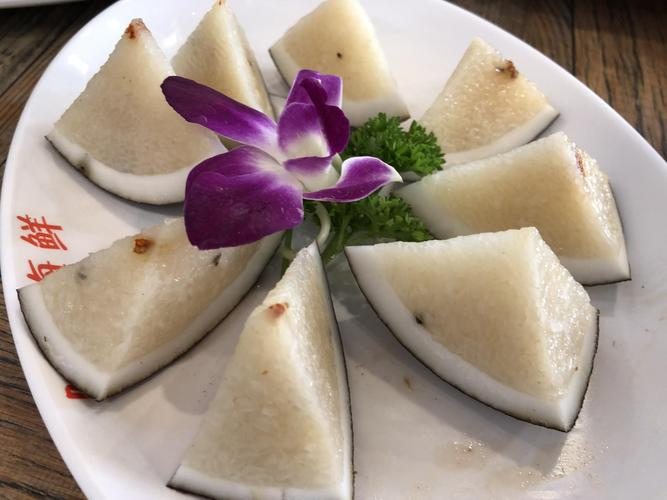

Top 3 Food in Haikou
Hainanese Chicken Rice (Hǎinán Jīfàn)

Introduction
Hainanese Chicken Rice is Haikou’s most famous dish—tender poached chicken served with fragrant rice cooked in chicken broth, plus a side of chili sauce and ginger paste. The key to its success is the chicken: local free-range “Wenchang chicken” (a Hainan specialty) is poached in boiling water with ginger and scallions until it’s juicy and tender (the skin stays pale and silky). The rice is cooked in the same chicken broth, infused with garlic and pandan leaves (a tropical herb with a sweet, grassy flavor). It’s a simple but flavorful dish—locals eat it for lunch or dinner, and it’s a must-try for anyone visiting Haikou.
Taste
Chicken: Tender, juicy, and mild—no gamey taste; the skin is silky and not fatty.
Rice: Fragrant, slightly oily, and packed with chicken and pandan flavors.
Sauces: Chili sauce adds a spicy kick; ginger paste cuts through richness with a fresh, zesty note.
Overall: Balanced and satisfying—simple ingredients done perfectly.
Price
Local Eateries: 25–35 CNY/serving (includes a whole small chicken or half a large chicken).
Famous Shops (e.g., “Wenchang Chicken Rice Restaurant”): 45–60 CNY/serving (uses premium Wenchang chicken).
Coconut Rice (Yēzi Fàn)

Introduction
Coconut Rice is a sweet Haikou snack—glutinous rice steamed inside a hollowed-out coconut shell, infused with coconut milk and sugar. The process is simple but effective: the coconut shell acts as a natural steamer, infusing the rice with a strong coconut aroma, while the coconut milk keeps the rice soft and creamy. It’s usually served warm, with a sprinkle of roasted peanuts or coconut flakes on top. You’ll find it at street stalls, dessert shops, and Qilou Old Street—locals love it as a mid-afternoon snack or a light dessert.
Taste
Rice: Soft, chewy, and creamy—packed with sweet coconut flavor; not too sticky.
Coconut Shell: Adds a subtle, fresh coconut aroma (you can scrape the soft coconut meat from the shell and eat it with the rice).
Toppings: Roasted peanuts add a crunchy contrast to the soft rice.
Overall: Sweet, tropical, and comforting—like a bite of Haikou’s sunshine.
Price
Street Stalls: 15–20 CNY/coconut (serves 1–2 people).
Dessert Shops: 25–30 CNY/coconut (with extra toppings like mango or coconut cream).
Grilled Fresh Squid (Kǎo Yóuyú)

Introduction
Grilled Fresh Squid is a popular Haikou street food—fresh squid (caught that morning from Haikou Bay) grilled over charcoal, seasoned with chili powder, garlic, and soy sauce. The squid is usually grilled whole (or cut into rings) until it’s tender and slightly charred—no overcooking, so it stays juicy. What makes Haikou’s version special is the freshness: the squid has a sweet, briny flavor that needs little seasoning. It’s sold at night markets (e.g., Qilou Old Street) and beachside stalls—locals eat it hot off the grill, often with a cold beer.
Taste
Squid: Tender, juicy, and sweet—briny with ocean flavor; no fishy aftertaste.
Seasoning: Charcoal gives a smoky aroma; chili powder adds a warm, spicy kick; soy sauce balances with subtle saltiness.
Texture: Slightly chewy (not rubbery) with a tender interior—grilling creates a light char on the surface that enhances the flavor.
Overall: Fresh, smoky, and satisfying—perfect for a casual street food bite or beachside snack.
Price
Street Stalls/Night Markets: 15–25 CNY/skewer (1 large squid or 2 small squids per skewer).
Beachside Stalls (Haikou Bay): 20–30 CNY/skewer (freshly caught that day, larger portion).
Seafood Restaurants: 38–58 CNY/serving (grilled squid with side dishes like fried garlic or lemon wedges).